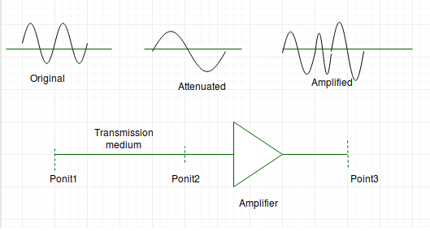

In communication system, analog signals travel through transmission media, which tends to deteriorate the quality of analog signal. This imperfection causes signal impairment. This means that received signal is not same as the signal that was send.
Causes of impairment –

- Attenuation – It means loss of energy. The strength of signal decreases with increasing distance which causes loss of energy in overcoming resistance of medium. This is also known as attenuated signal. Amplifiers are used to amplify the attenuated signal which gives the original signal back.

Image Source – aviationchief Attenuation is measured in decibels(dB). It measures the relative strengths of two signals or one signal at two different point.
Attenuation(dB) = 10log10(P2/P1)
P1 is power at sending end and P2 is power at receiving end.
- Distortion – It means change in the shape of signal. This is generally seen in composite signals with different frequencies. Each frequency component has its own propagation speed travelling through a medium. Every component arrive at different time which leads to delay distortion. Therefore, they have different phases at receiver end from what they had at senders end.
- Noise – The random or unwanted signal that mixes up with the original signal is called noise. There are several types of noise such as induced noise, crosstalk noise, thermal noise and impulse noise which may corrupt the signal.
Induced noise comes from sources such as motors and appliances. These devices act as sending antenna and transmission medium act as receiving antenna. Thermal noise is movement of electrons in wire which creates an extra signal. Crosstalk noise is when one wire affects the other wire. Impulse noise is a signal with high energy that comes from lightning or power lines
SNR = AVG SIGNAL POWER / AVG NOISE POWER
References –
Data Communication and Networking Fourth edition by Forouzan
Data Communication – Slideshare